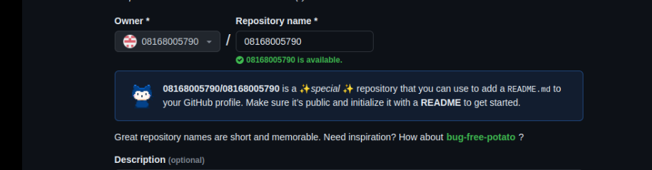
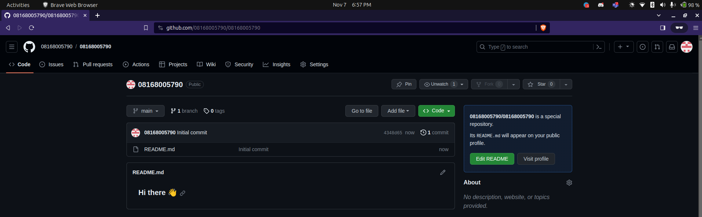
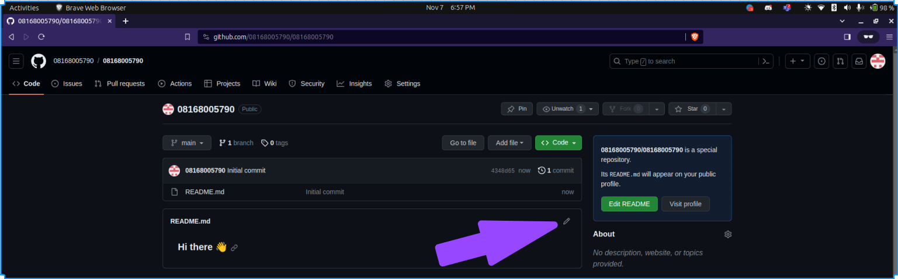

Lesson 2: Creating your GitHub Profile Readme
What is a Github Profile README?
The GitHub profile README serves as a distinctive profile page showcasing who you are and what you do. Functioning as a customizable “about me” section, it provides an avenue for individuals to introduce themselves, exhibit their projects, and communicate details about their interests and achievements. Essentially, the content of this README defines one’s GitHub profile, making it a pivotal element for creating a compelling first impression, particularly for employers seeking insights into an individual’s skills and interests upon visiting their GitHub profile. By the end of this lesson, you will have crafted your own GitHub profile readme.
What is Markdown?
Markdown is a lightweight and easy-to-use syntax for styling all forms of writing on the web. Markdown is widely used because it allows you to maintain the readability of plain text while offering the styling capabilities of HTML. Our goal is to familiarize you with the foundational elements of Markdown to transform plain text into a rich, well-formatted document.
Markdown is a lightweight markup language that is widely used for formatting text on the web. In the context of GitHub and profile READMEs, Markdown serves as a simple and intuitive way to add formatting elements to your text without needing to use complex HTML or other markup languages. With Markdown, you can easily create headers, lists, emphasize text, add links, insert images, and more, using a straightforward and human-readable syntax.
This lesson will be but a brief introduction of markdown. In the next two lessons, you’ll learn how to use Markdown to enhance the visual appeal and structure of your profile, making it easier for others to read and understand the information you share.
Learning Objectives
- Students will be able to create their own GitHUb profile README
- Students will be able to recognize and apply markdown syntax to create structured and styled text documents
Let’s Begin Creating a GitHub Profile README
- Log in to GitHub.
- Click on + icon at top right of the page and select New Repository.
- A Create a new repository page opens. In the Repository name field, enter your GitHub username. After entering your username, GitHub displays a message describing that you’re about to create a GitHub special repository.
For example, if your username is octocat, you would create a repository named octocat.

Check the public checkbox under repository type to make the Github profile README visible to everyone who visits the Github profile page. If you don’t want users to see your Github profile README while it’s still in development, you can choose Private. Once done with editing the README, you can go to the repo settings to change it’s visibilty to Public.
Check the Add a README file checkbox. This will add a
README.mdfile where we’ll add the profile contents. The field values should look similar to the image below.
- Click on the Create repository button. A special repository is created successfully. Go to the repository you just created by clicking your profile picture, then “Your repositories”, and then the repository named after your GitHub profile. You’ll see a README.md file added to the repository.

In the next few sections, we’ll add contents to our README.md file. We’ll use Github’s file editor to write and preview the changes. There are other text editor which you can use as well such as Vs Code Editor, Sublime Text, Atom etc. But for this lesson, we shall be making use of Github file editor.
Open the README.md file and click on the Edit this file icon (a pencil icon) on the top right of the repo page. As highlighted in the image below:

Profile README Template
Copy and paste this into your GitHub profile readme. Fill out the areas to make it relate to you.
# <Your Name Here>
Hello, GitHub! üëã
I'm <Your Name Here>, a student interested in <Your Profession/Interests such as: computer science, data science, web develpoment, machine learning, data engineering, statistics, software development...>. Welcome to my GitHub profile!
## About Me
- üå± I'm currently learning <Your Current Learning Focus>
- üí¨ Ask me about <Anything You're Enthusiastic About>
## Technologies and Tools
- üíª Proficient in: <List of Programming Languages or Technologies>
- üöÄ Skills: <Any Other Skills or Tools You Want to Highlight>
## Let's Connect!
- Here is my [LinkedIn](Your LinkedIn Profile Link) profile
- Here is my [Twitter](Your Twitter Profile Link) profile
Feel free to explore my repositories and don't hesitate to reach out. Happy coding! üöÄIf your name is Chidi Anagonye, a web developer from Senegal, this is what yours would look like:
Chidi Anagonye
Hello, GitHub! üëã
I’m Chidi Anagonye, a student interested in web develpoment. Welcome to my GitHub profile!
About Me
- üå± I‚Äôm currently learning the ins and outs of front-end web development, focusing on HTML, CSS, and JavaScript.
- üëØ I‚Äôm eager to to learn new technologies and apply them in web projects!
- üí¨ Ask me about my journey into coding, the latest web technologies, or anything tech-related that you find exciting.
Technologies and Tools
- üíª Proficient in: HTML, CSS, JavaScript
- üöÄ Skills: Responsive Web Design & Basic Command Line
Let’s Connect!
Feel free to reach out to me. Happy coding! üöÄ
Notes
Remember that your GitHub profile is visible to the public, so make sure your customization represents you and your work effectively. This customization not only adds a personal touch to your GitHub presence but also serves as a valuable portfolio for potential collaborators and employers.
In the next lesson, we’ll understand markdown more so that you can format your GitHub profile readme just how you like it.
Pictured below is what your github profile will be if you do everything right.